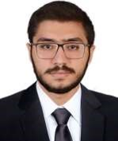

| Date of Birth: | 12th of December 1996 |  |
| Nationality: | Egyption | |
| Languagh: |
Arabic (mother tongue)
| |
| Marital Status: | Single | |
| Contact Address: | 158 Al Shabab Road, 2nd District West,Al Shorouk City | |
| Email: | mohammedelmosallamy96@gmail.com | |
| Mobile: | 01025753911 |
The project presents a website that provides patients with the ability to get medical services in a timely manner at the right place. The system aims to overcome the obstacles faced by patients through its intelligent interactive services, such as electronic booking services, by finding the suitable and nearest hospitals or laboratories. “Schedule your appointments and guarantee your place” is the main objective of the system.